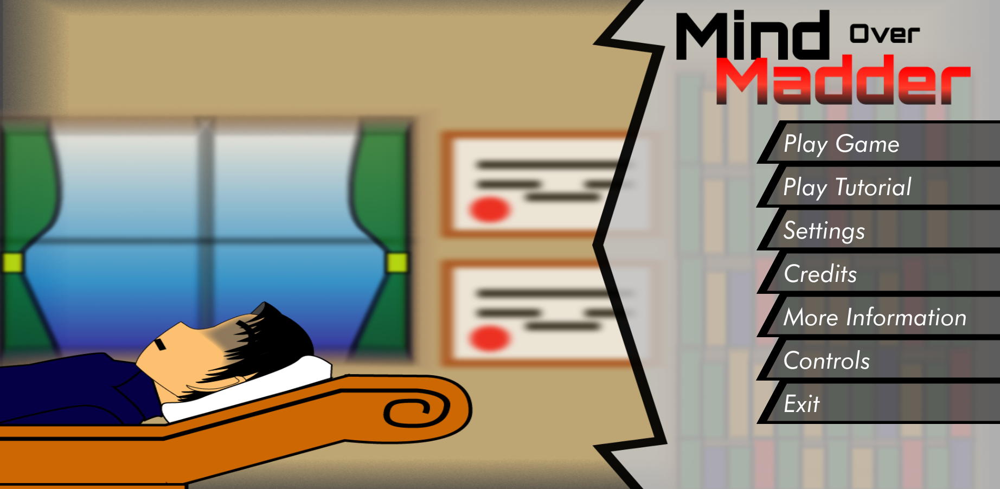
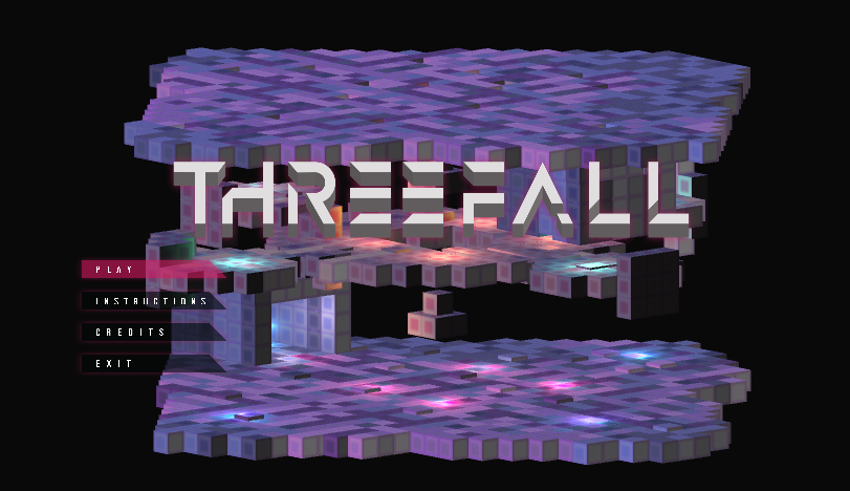

BC Game Jam 201807/2/2018
Focused on keeping the team organized throughout the event by ensuring people always had something to do. I focused on the menu's and all the content with them as I wanted to learn how to use the GUI system in Unity better. I coniuned to work with the team and reworked the written dialog the team found lacking for the game.
BC Game Jam 201710/2/2017
This was made in a 48 hour game jam. There was no plan for a team beforehand and a team of 10 was created. I did alot of programming, planning, and manageing. I ended up continuing the project past the end of the gamejam to fix some of the larger bugs that remained. The concept of the game is that you have to shoot out the destrucable floor from underneath your opponent. It is a local co-op game requiring 2 people to play.
Global Game Jam 201624/1/2016

My first Game Jam, as our team was comprised of entirely programmers so I had some experience in 3D modeling so I offered to be the artist for the game. As the theme was ritual our idea was shooting specific ships in order so I designed different ships with a general shape to be repeated. I was also new to animation but stuck to it and am happy with how much of it turned out. As the jam went on I realized I was mostly done the art assets so I started to make music for the game. I had never done any audio design of any kind before so I am happy with what I was able to in 8 hours with self teaching